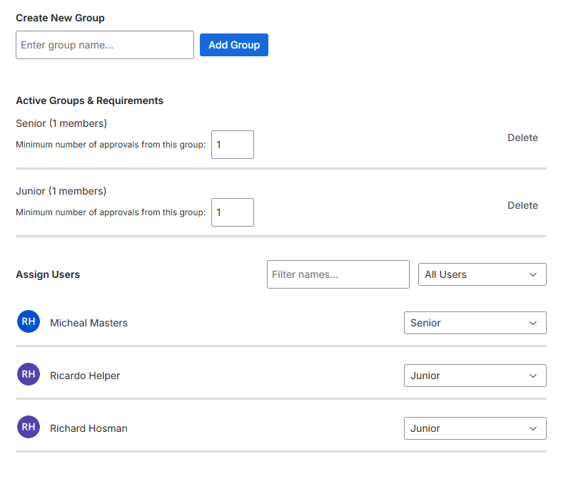

Getting Started
Follow these simple steps to configure your repository to use the review group system:
1
Create Approval Groups
Open the app in repository settings. Define groups like "Senior Developer", "Junior Developer", "DevOps", "QA" etc.
2
Set Minimum Approvals
Define required approvals. e.g., 2 from "Senior Developer" and 1 from "DevOps."
3
Assign Users
Search workspace members and assign them to groups via dropdown menus.
4
Activate Merge Check
Add "Reviewer Group Enforcer" under the "Custom Merge Checks" section of the repository settings.
How it works: When a merge is attempted, the app scans approvers. If any group hasn't met its requirement, the merge is blocked.

Requirements
- Bitbucket Premium: This app requires custom merge checks, which are only available in Bitbucket Premium.
Privacy & Data Security
Your security is our priority. This application is built on Atlassian Forge.
"We store Bitbucket Account IDs and configurations within Atlassian Forge Storage. No data is transmitted to external servers."
- Data Localization: All configuration data is stored in Atlassian's secure Forge Storage.
- No External API calls: The app does not communicate with any third-party analytics or tracking services.
- Identity: We only reference Atlassian Account IDs to verify group membership during the merge process.
permissions:
scopes:
- storage:app
- read:pullrequest:bitbucket
- read:workspace:bitbucket
- read:repository:bitbucket
- read:user:bitbucket